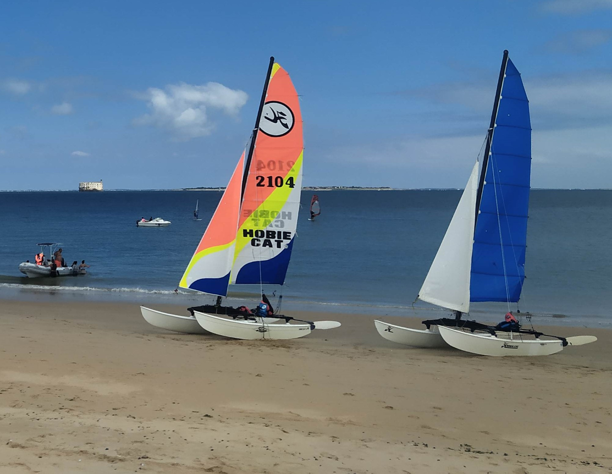
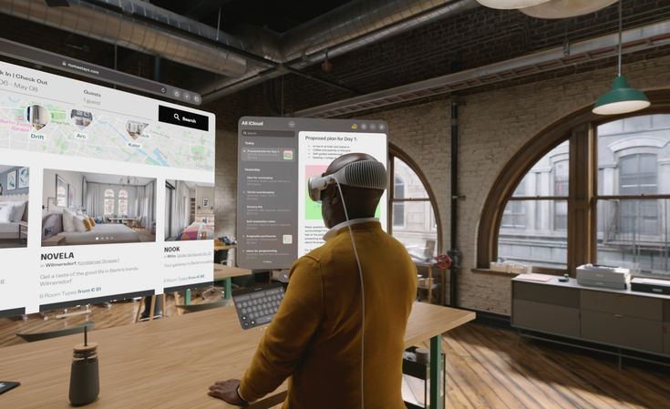
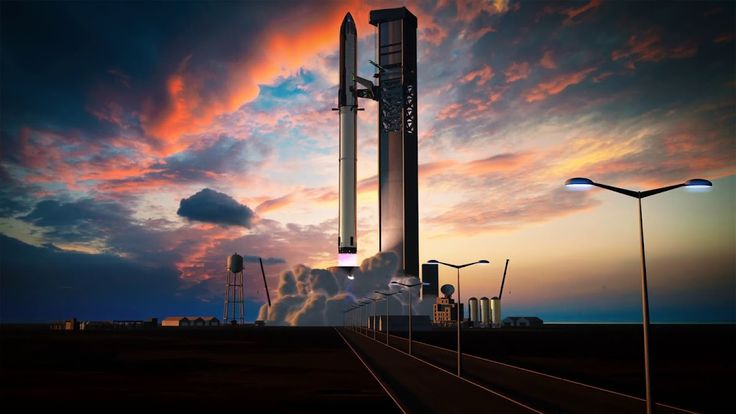
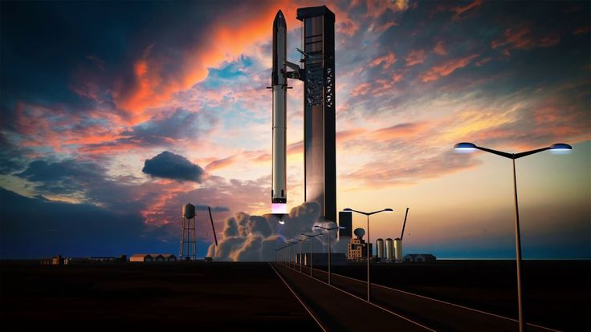
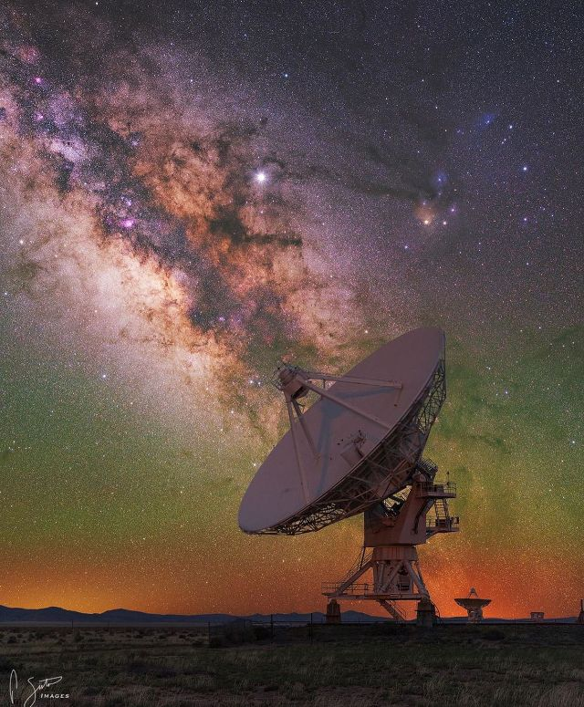

Interests


Thomas likes doing sports in his free time. He runs every week on the shores of the Loire. In addition, he does bouldering with the University. Also, he really likes volleyball. During his holidays Thomas does sailing on catamaran near La Rochelle, he holds the level 3 and hopes to hold level 4 !
NEW TECHNOLOGY & SPACE ENGINEERING
 

Thomas is passionated by new technology. He likes watching videos, articles, reviews of this subject. Today, he is excited by the Apple announcement about the Apple Vision pro !
He is convinced that this product will change habits and preconceptions about virtual reality headset.
Thomas enjoys the space engineering especially the one of SpaceX. As new technology he informs him about the subject and keeps up with it.


Thomas is passionated by Astronmy. He likes reading books and watch some vidéos about it. One day he will wants to buy a telescope.
Nature is a ralaxing place for Thomas. He is concerned by the climate changes. He lives in countryside and it contributes to it.